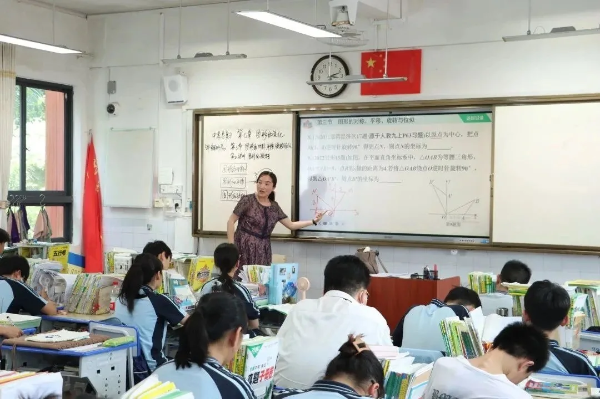

七月的南宁，阳光正好。校园开放日这天，一批初三学生和家长走进二十九中，在课堂、操场与社团活动室里，看见了这所学校真实的一天。
没有刻意的展演，也没有被反复排练的“样板课”。开放日的安排很简单：跟着课表走，跟着孩子走。家长们坐在教室后排，听了一节完整的数学课；在操场上，看了一场没有提前通知的班级篮球赛；路过舞蹈室时，被里面的音乐声吸引，停下脚步。
第一站：课堂里，问题比答案多
数学课上，老师没有直接给出结论，而是把一道生活中的测量问题抛给学生。有人画图，有人列式，有人和同桌争论。老师在各组之间走动，偶尔停下来问一句：“你是怎么想的？”
一位家长在后来的交流中说，自己原本担心孩子“上课不敢说话”，但那天看到孩子举手了两次。“答得对不对不重要，敢站起来，我就很高兴。”

教育不是注满一桶水，而是点燃一把火。我们希望学生离开课堂时，带走的不是一个标准答案，而是继续追问的欲望。
第二站：操场上，输赢之外
篮球是这所学校的传统项目。下午的班级联赛没有开幕式，哨声一响就开始。比分交替上升，场边的加油声一阵高过一阵。终场前，落后的一方投进一记三分，把比赛拖进加时。
最终他们还是输了。但退场时，队员们排成一列，和对手击掌。教练站在场边，没有复盘战术，只说了一句：“今天没有人放弃，这很好。”
第三站：舞台与社团，让热爱有地方生长
舞蹈室里，几个女孩正在为艺术节排练。动作还不算整齐，但每个人都很投入。隔壁的科创活动室，学生们围着一段程序争论不休；再往里走，合唱团的声音从门缝里传出来。
这些场景并不“惊艳”，却是校园生活最日常的部分。一所学校的底色，往往就藏在这些没有被安排的角落里。
开放日结束时，天色渐暗。有家长在留言簿上写下：“把孩子交给这样的学校，我们放心。”这句话被工作人员拍了下来，发在了工作群里。
教育的成果，很难在一天里看完。但我们愿意把门打开，让更多人走进来，慢慢看。
本文为网站演示文稿，文中场景与细节为示例内容，具体活动信息以学校官方发布为准。